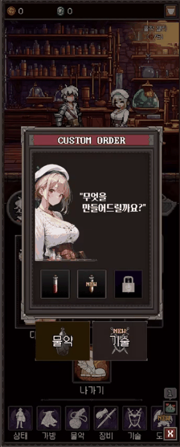
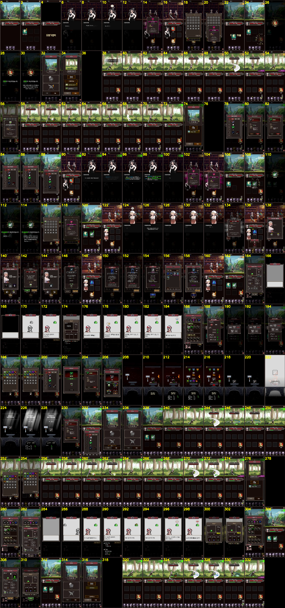
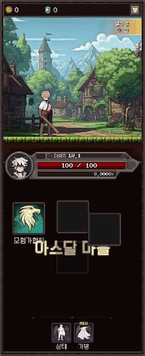
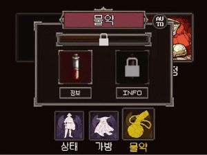
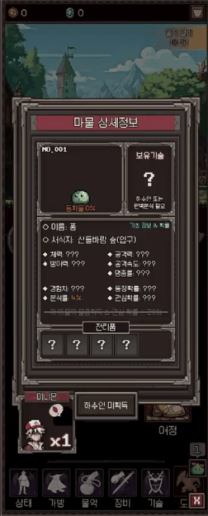

RE001 개선사항
2026-07-08 · 실제 버그·QA에서 드러난 패턴 → 눈으로 보는 개선안 | ●긴급 ●권장 ●여유
1. 데이터 파이프라인
같은 유형의 데이터 사고가 3번 — 크리쳐 시트 밀림 · 고블린 소실 · 물약 재료 ID 오타
시트 한 칸이 밀리면 생기는 일 (실제 사고)
구글시트27컬럼으로 개편
➜
파서구버전 순서로 읽음
➜
JSON전 필드 오염
➜
게임이름 "1", 스폰 실패
| 시트 헤더 | DataId | CreatureID | Name | PrefabLabel | IconLabel | MaxHp |
|---|---|---|---|---|---|---|
| 시트 값 | 2001 | 1 | 젤리 퐁 | Slime | (빈칸) | 30 |
| 구파서가 넣은 곳 | DataId=2001 | Name="1" ←이름이 1로 뜬 이유 | PrefabLabel="젤리 퐁" | Icon="Slime" | MaxHp=0 | (밀림…) |
현재 — 컬럼 순서로 읽음: 컬럼 하나만 끼어도 전 필드 오염
개선 — 헤더명으로 읽기 + 파싱 직후 참조 ID 검증 메뉴(Tools/ValidateData)
긴급

참조 ID 검증 자동화
재료 ID 오타(1001)로 업그레이드가 영구 불가였음 — 런타임까지 아무도 모름
파서가 아이템/키/어드레서블 존재 여부를 표로 뱉으면 시트 저장 즉시 발견
▲ 원작 영상의 물약 업그레이드 기대 연출 (RE001.mp4 141s)
권장

소스 일원화 — 로컬 xlsx 퇴역
빈 CreatureData.xlsx — 로컬 파서 실행 시 크리쳐 JSON 전멸
구글시트로 일원화, 로컬 파서 메뉴 제거/경고
2. UI 코드 — 재발 방지 장치
한영 미적용 36건 · DOTween 충돌 · UI 파티클 미표시가 모두 "패턴 부재"에서 나옴
긴급
정적 라벨 로컬라이즈 자동화
팝업마다 수동 RefreshTexts — 한쪽은 "정보", 한쪽은 "INFO"였던 실제 사례
UI_Base 공통 헬퍼 + "코드가 안 만지는 프리팹 텍스트" 자동 검출 메뉴 (이번 감사 스크립트 재활용)
권장

UI 파티클 = UIFx 단일 경로
월드 파티클을 캔버스에 직접 붙이면 안 보임 — 3곳에서 재발했던 함정
UIFx.PlayParticle만 허용 + Instantiate에 경고 가드 1줄▲ UIFx 전환 후 정상 재생된 해금 연출 (검증 녹화)
권장
DOTween 3줄 규약
진입 애님 중 제작 클릭 → 프레임 어긋난 채 고정, 콜백 예외 → 버튼 전체 잠김
①재트윈 전 DOKill+스냅 ②플래그는 try/finally ③저작 위치는 캡처 후 복원
여유
바인딩 검증 정례화
TravelButton(OnBattle) 괄호 하나로 바인딩 침묵 실패enum↔오브젝트명 일치 일괄 검사 메뉴 (기존 파이썬 스크립트 승격)
3. 게임플레이 / UX
권장

물약 수량 실연동
보유 수량 = 5 하드코딩 스텁 (껐다 켜면 리셋) — 영상의 쿨타임 버그는 수정 완료
아이템/세이브 연동 (30000/40000 ID 대역 기존재)
권장
연출 수치의 데이터화
페이드 2s·플래시 1s·확대 1.5배… 튜닝마다 코드 수정
UITuning 시트/JSON로 승격 — 기획자가 직접 조정
긴급
세이브 견고화
값 하나 바뀔 때마다 전체 저장 + 단일 파일 (크래시 타이밍에 유실 위험)
더티 플래그+주기 저장, 임시파일→교체(atomic)+백업 1개+버전 필드
4. QA 프로세스 — 이번에 검증된 방식의 정착
권장
원클릭 연출 녹화의 일반화
해금 연출 1종만 자동 녹화 (이 영상이 그 결과물)
대화/랭크업/퀘스트 팔로우/제작에도 동일 레코더 — 수정안 검증이 분 단위로
여유

빌드 전 스모크 순회
Test 메뉴가 흩어져 있어 회귀 확인이 수동
데이터 검증→바인딩 검증→핵심 팝업 개폐→언어 왕복을 한 메뉴로 순회
여유
미사용 에셋 격리
참조 0건 프리팹 25개가 검색/감사 노이즈
_Deprecated/로 이동 → 한 마일스톤 뒤 삭제